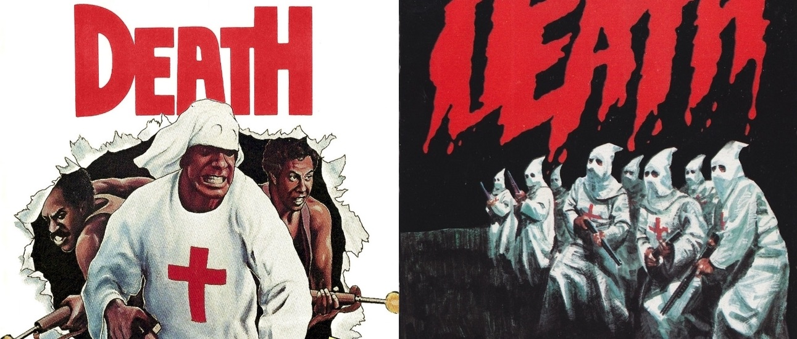

Countryside horror complete films Vol.2 allnight "This is the countryside of Omotenashi"
9/21(Wed) 22:00
I fear the countryside.
I fear the poor human herd that live in a dark house.
Lonely nature of withered winter is plaguing my life.
The country air is gloomy heavy painful.
The countryside of touch is feeling bad and rough.
I fear the countryside.
The countryside is a pale of fever dream.
Sakutaro Hagiwara's poetry "barking at the moon."
ビジュアルデザイン：ミヤジー・スコリモフモフスキ
SONNY BOY
1989 / USA / 96min
Director: Robert Martin Carroll
Music: Carlo Maria Korudio
Starring: David Carradine, Brad Dourif
When hero was a boy, he has been kidnapped and cut off his tongue by the countryside of the family. He is going to try to escape from slavery life. David Carradine got in drag, pig man, wild boy, a very countryside horror world. 80's hidden masterpiece movie.
Screening scheduled to start: 22:00〜
"Woman in the afternoon" stirring up!!

1979 / Japan / 69min
Director: Nobuyuki Saito
Screenplay: Chiho Katsura
Starring: Natsuko Yashiro, Yumi Fukazawa, Yuko Asuka
Just Japanese-made countryside horror that hero went to drive to the country is consecutively attacked by a redneck while the full time. This is a roman pornography which Chiho Katsura（playwright) boast with confidence, "The strongest abnormal film in movie history".
Archived by the National Film Center of Tokyo
Screening scheduled to start: 23:50〜
Brotherhood Of Death

1976 / USA / 85min
Director, Screenplay: Bill Berry
Starring: Roy Jefferson, Le Tari, Haskell Anderson III, Brian Clark
In Alabama, it describe the brutal struggle of blacks and whites. The Ku Klux Klan(even police officers are the members) strive to lynch for the blacks. Brothers who returns soldiers from Vietnam kill them. Most timely film this year.
Screening scheduled to start: 1:10
Trapped
1982 / Canada / 98min
Director: William Furyue
Starring: Henry Silva, Nicholas Campbell
University student group visited a village of mountains for investigattion. There was a mad village of fear dominated by rowdy a village headman.
Screening scheduled to start: 2:55
The Texas Chainsaw Massacre 2

1986 / USA / 101min
Director, Screenplay and Music: Tobe Hooper
Screenplay: L · M · Kit Carson
Starring: Dennis Hopper, Caroline Williams, Jim Shidou, Bill Mozurii
After 13 years from the previous film(The Texas Chainsaw Massacre). The family is still active in Texas! Must see that Mad sheriff vs mad family of mad confrontation in the mad roar screening! !
Screening scheduled to start: 4:45